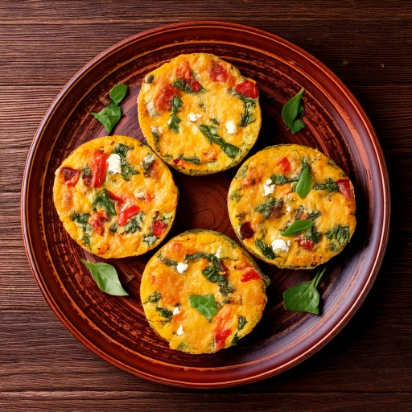

Muffins de huevo preparados con anticipación, con harina de garbanzo, espinaca y queso feta.
Información Nutricional (por porción)
Por qué encaja en una dieta apta para diabéticos
Con solo 5g de carbohidratos por porción, es una opción más ligera en carbohidratos sin necesidad de un enfoque estrictamente bajo en carbohidratos, y su índice glucémico estimado de ~35 significa que los carbohidratos que tiene tienden a digerirse lentamente en lugar de elevar rápido el azúcar en la sangre, y 9g de proteína por porción también ayuda a hacer más lenta la digestión y suavizar cualquier subida después de comer, y 1g de fibra por porción agrega el mismo efecto de hacer más lenta la absorción.
Ingredientes
- 4 grande4 grande huevos
- 1/4 taza60 ml harina de garbanzo
- 1 taza235 ml espinaca baby
- 1/4 taza60 ml queso feta bajo en sodio
- 1/4 taza60 ml pimiento
- 1/4 cdta1 ml pimienta negra
Instrucciones
- Precalienta el horno a 350°F (175°C) y engrasa un molde para muffins.
- Bate los huevos con la harina de garbanzo hasta que quede suave.
- Incorpora la espinaca, el queso feta y el pimiento.
- Reparte en los moldes para muffins y hornea 18-20 minutos hasta que cuajen.
Esta receta es una de más de 150 en la Biblioteca de Recetas de GlucoBeacon, cada una con desglose nutricional completo, estimación de índice glucémico, y registro con un toque directo a tu historial de azúcar en la sangre. Descarga GlucoBeacon en Google Play →